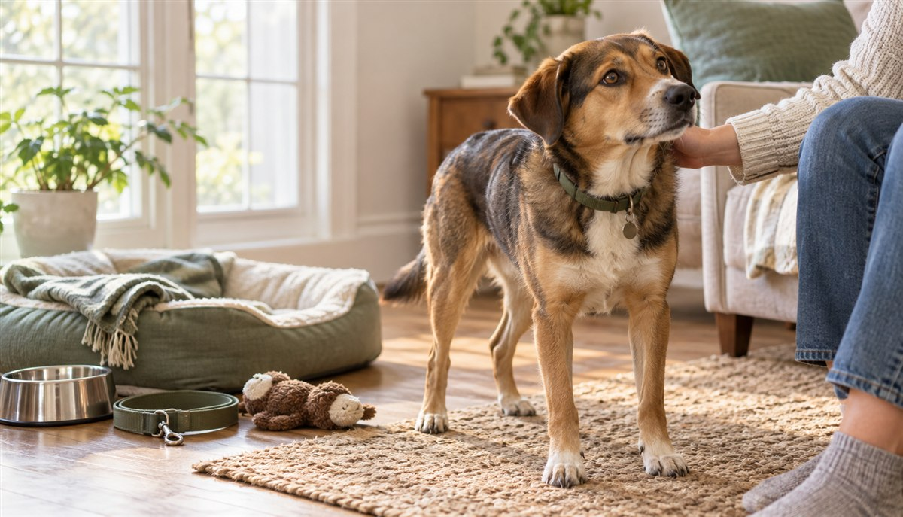

Adopting an Adult Dog: First-Week Checklist

An adult dog arrives with a fully formed personality, a history you may know only in fragments and, often, a few excellent life skills already installed. The first week is not an audition for either of you. It is a quiet information-gathering period: make the home predictable, prevent avoidable mistakes and give the dog enough space to show you who they are.
Researched by the CanMyPet Editorial Team · Prepared October 27, 2026 · Based on adoption guidance from the ASPCA, RSPCA and AVMA.
- Set up one quiet home-base area before pickup.
- Bring home the dog's current food, records and one familiar-smelling item.
- Use the same simple rhythm for meals, outdoor breaks, walks and sleep.
- Keep the social calendar almost empty.
- Supervise indoors and use a leash outside, even in a fenced area at first.
- Reward the small wins; do not test everything the dog “should” know.
- Ask the shelter for help early when something feels difficult.
Why an adult dog can be the easier first dog
Adult dogs are often passed over because people assume bonding only happens with puppies. It does not. An adult dog can learn a new routine, attach deeply to new people and adapt beautifully to a different home. You also start with better information: the shelter or foster may already know the dog's size, energy level, handling preferences, response to other animals and favorite ways to spend a day.
The tradeoff is that “adult” does not mean “already trained for your house.” A dog who was perfectly house trained in a foster home may not understand the door, schedule or outdoor surface in yours. A dog who slept on a sofa may hesitate at stairs. Treat the first week as a fresh orientation rather than proof of the dog's permanent behavior.
What you may get sooner
A more predictable adult size, longer attention span, known energy range and fewer around-the-clock puppy logistics.
What still takes time
Trust, a new house-training pattern, comfortable alone time, introductions and the confidence to behave normally in a new place.
Before pickup: ask for the dog's operating manual
The shelter profile is the headline; the handoff conversation is the useful fine print. Ask the staff or foster caregiver to walk you through an ordinary day, not just the dog's best day. Write the answers down while the details are fresh.
- Current routine: meal times, outdoor-break times, bedtime and usual walk length.
- Current food: brand, formula, amount used by the shelter and any feeding ritual the dog knows.
- Known cues: the exact words and gestures used for sit, wait, outside, bed or recall.
- Equipment: collar or harness style, leash setup and what the dog has already practiced wearing.
- Comfort: favorite toy, blanket, resting surface, handling preferences and familiar sounds.
- Real-world notes: elevators, cars, stairs, children, visitors, other dogs, cats and time alone.
- Records and support: adoption agreement, identification and microchip information, veterinary records and the best post-adoption contact.
The AVMA recommends bringing available vaccination and deworming history to the dog's first veterinary visit. Keep all records together rather than relying on memory or a photo buried in your phone.
Set up a home base, not a welcome-home festival
The ASPCA recommends a dedicated, quiet space where a newly adopted pet can decompress. For an adult dog, that might be a corner of the living room behind a baby gate, a calm bedroom or a kitchen area with a washable floor. Include a bed, water, a safe chew or toy and enough space to turn around and stretch out. It should feel connected to the household without sitting in the busiest traffic lane.
Home base is not punishment and it does not need to be a closed crate. It is the place where nothing surprising happens. If the dog chooses to rest there, let that choice work. Children and visitors should not follow the dog into the space, lean over the bed or use it as a petting station.
The adult-dog starter kit
Ready before arrival
- Secure collar with ID tag
- Well-fitted harness and fixed-length leash
- Food and water bowls
- The dog's current food
- Bed or washable mat
- Baby gate or room divider
- Waste bags and enzymatic cleaner
Buy slowly
- Extra beds before you know sleeping preferences
- A giant toy collection
- Multiple new treats and foods at once
- Specialized gear the dog may not need
- A wardrobe chosen before fit and comfort are clear
You do not need to solve the dog's entire future before pickup. Start with safe essentials and learn what this particular dog uses. If you want a realistic ownership budget before adding upgrades, the pet cost calculator separates setup costs from recurring monthly expenses.
Day 1: make the world smaller
Go directly home if possible. Skip the pet-store tour, neighborhood meet-and-greet and celebratory visitor parade. Give the dog a quiet outdoor break, then introduce home base and one or two nearby rooms on leash. Let sniffing do the work. Show the water, resting place and route to the door; the rest can wait.
Offer the same food on the schedule the dog already knows. Keep voices low and hands relaxed. Sitting sideways a short distance away is often more welcoming than calling the dog repeatedly. If the dog approaches, brief contact followed by a pause lets them decide whether to ask for more.
Take a short, low-pressure walk only if the handoff guidance and the dog's comfort support it. A familiar block traveled slowly is more useful than a long “tire them out” march. Use a secure leash every time outside during this adjustment period; a startled new dog does not yet know that your door is home.
Days 2–3: repeat more than you add
The most helpful thing on day two is to look a lot like day one. The RSPCA recommends establishing a routine for walks, meals, play, rest and bedtime so the dog can begin predicting what happens next. Predictability reduces the number of decisions a dog has to make in a place where every smell is new.
| Part of the day | Keep it simple | What you are learning |
|---|---|---|
| Morning | Outdoor break, breakfast, quiet rest | Door routine, appetite rhythm, preferred resting area |
| Midday | Short walk or sniff break, two-minute cue game | Leash comfort, response to name, neighborhood sensitivity |
| Afternoon | Rest, supervised exploration of one new area | Which rooms invite calm and which create too much excitement |
| Evening | Meal, calm activity, final outdoor break | Whether the household rhythm helps the dog settle |
Do not confuse stillness with instant comfort. A dog may be quiet because they are observing, not because every situation feels easy. Our dog body-language guide explains why the whole body—weight shift, eyes, mouth, ears and tail—matters more than one wag.
Days 4–7: add one layer at a time
By the second half of the week, you may have a better sense of the dog's natural rhythm. Add only one meaningful challenge at a time: another room, a slightly different walking route, a short period behind a gate while you remain nearby or a calm visitor who follows instructions. If the dog becomes less able to settle after a change, shrink the plan again. That is useful feedback, not failure.
Keep training sessions tiny. Say the dog's name once, reward a glance. Reward four paws on the floor. Toss a piece of the dog's regular food onto the bed and quietly praise settling. These repetitions teach the new household's vocabulary without turning the first week into an exam.
House training: assume the map is new
Even a reliably house-trained adult dog may not understand where the bathroom door is, how long the elevator takes or which outdoor surface is allowed. Start with more opportunities than you think the dog needs: after waking, after meals, after active play and before bed. Use the same exit, the same simple cue and the same calm praise outside.
Indoors, supervise or use the gated home-base area. If an accident happens, clean it thoroughly with an enzymatic cleaner and adjust the schedule. Scolding after the fact does not teach the route outdoors; it only makes elimination around people feel risky.
Introductions to resident pets
Do not rely on the idea that everyone will “work it out.” For resident dogs, begin with the introduction plan provided by the shelter and use neutral space when possible. The RSPCA recommends removing resources that could create competition, including toys and bones, before dogs enter the home together. Keep early interactions short and create separate resting and feeding areas.
For cats, use physical separation first. Give the cat uninterrupted access to food, water, litter and elevated escape routes while the new dog learns the home from the other side of a closed door or gate. Our step-by-step pet introduction guide covers dog-to-dog and dog-to-cat setups in more detail.
Visitors and children: let the dog opt in
Ask visitors to ignore the dog at first: no direct staring, leaning, reaching over the head or calling from across the room. Let the dog observe and choose whether to approach. One calm person is a better first visitor than a group.
Children need clear jobs: walk, do not run; use indoor voices; never disturb the dog while eating or resting; and ask an adult before touching. Adult supervision means the adult is close enough to interrupt, not watching from the next room. The dog should always have an exit path to home base.
Alone time without a dramatic first test
Do not wait until the first workday to discover how the dog handles your departure. Once the dog can settle in home base while you move around the house, practice very short, ordinary absences: step behind a door, return calmly and gradually vary the duration. Keep departures and returns uneventful.
Use the management setup the shelter recommended and remove items the dog could chew or knock over. A camera can help you observe without turning every sound into a guess. If alone time is consistently difficult, contact the shelter's behavior support team or a qualified reward-based trainer rather than extending the time and hoping repetition fixes it.
Seven common first-week mistakes
- Giving full run of the house immediately. More space can mean more doors, windows, objects and choices before the dog understands any of them.
- Inviting everyone over. A social dog can meet people later; a cautious dog cannot undo an overwhelming first evening.
- Changing food, treats and schedule at once. Keep the familiar pieces stable, then change one variable at a time.
- Taking the dog to a crowded dog park. You do not yet know the dog's play style, recall or comfort around unfamiliar dogs.
- Testing possessions. Repeatedly taking bowls, toys or chews to “prove” the dog allows it creates conflict instead of trust.
- Expecting instant gratitude. Adoption is a change of address, not a promise that the dog understands the story you tell about it.
- Waiting too long to ask for help. The adoption organization wants the match to succeed and already knows the dog better than most online advice does.
Your first-week checklist
- Home-base bed, water and gate are set up before pickup.
- Collar, identification, harness and leash fit securely.
- Shelter routine, food information, cues and records are written down.
- Doors, windows, yard gates, cords, trash and chewable items are secured.
- Meals, outdoor breaks, walks and bedtime happen on a repeatable rhythm.
- The dog has quiet rest periods without being approached.
- Resident pets have separate food, toys and resting spaces.
- Visitors know to wait for the dog to approach.
- Short reward-based training moments are built into normal life.
- A first veterinary appointment is arranged and records are ready to bring.
- Microchip and identification details are transferred or confirmed.
- The shelter's post-adoption contact is saved in your phone.
Add the dog's recurring care dates to the free pet care calendar, then read how much time a dog needs each day to turn the first-week rhythm into a sustainable routine.
Frequently asked questions
How long does an adopted adult dog take to settle in?
There is no universal deadline. Some dogs explore immediately; others need days or weeks before their normal personality appears. Use the first week to create safety and predictability, then let the dog's behavior—not a countdown—set the pace.
Should I give a newly adopted dog the whole house?
Usually not on day one. Start with a quiet home-base area and supervised access to a small part of the home. Expand access gradually after the dog can rest, move around and follow the household routine comfortably.
Should visitors meet my adopted dog during the first week?
Keep the first days quiet unless the dog is clearly comfortable and the shelter advised otherwise. When visitors do come, ask them to ignore the dog at first and let the dog choose whether to approach.
When should training start with an adopted adult dog?
Training starts immediately through routine and reinforcement, but formal sessions can stay very short. Reward the behaviors you want—checking in, settling, coming indoors and walking with you—without testing every command the dog may know.
What if my adopted dog has an accident indoors?
Treat the dog as if house training is new: provide frequent, predictable outdoor breaks, supervise indoors, reward outdoor success and clean accidents with an enzymatic cleaner. A new environment can disrupt habits that were reliable elsewhere.
Sources: ASPCA Adoption Tips, RSPCA: Bringing Your Rescue Dog Home, RSPCA: Introducing Dogs, and AVMA: Selecting a Pet Dog. Sources checked October 27, 2026.